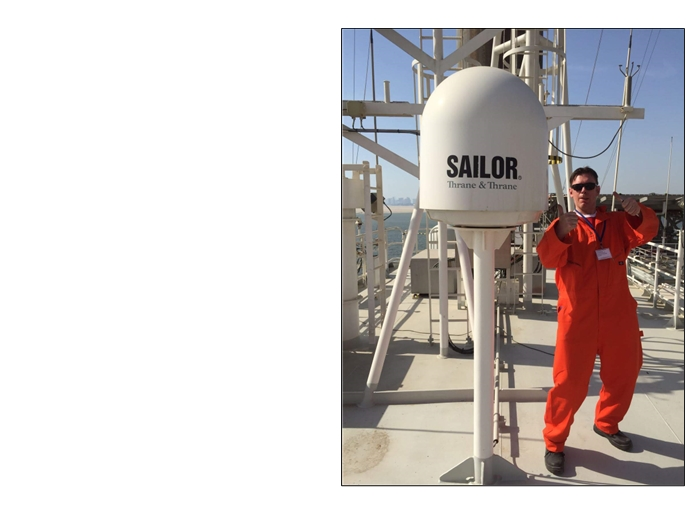

Marine IT Solutions
Marine IT Solutions aims to improve your connectivity and IT operations on land and sea. We maximize IT-efficiency and enhance reliability while reducing cost.
Simplicity and experience is our starting point.
With our 25 years of experience in IT- and maritime business we are ready to help you run your business the way you want.